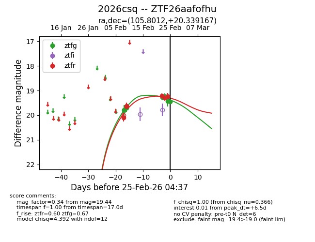
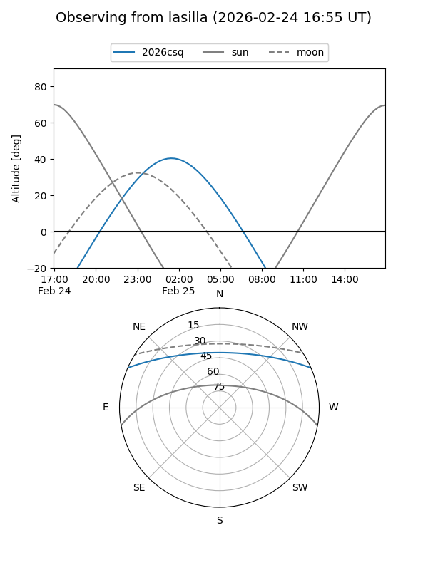
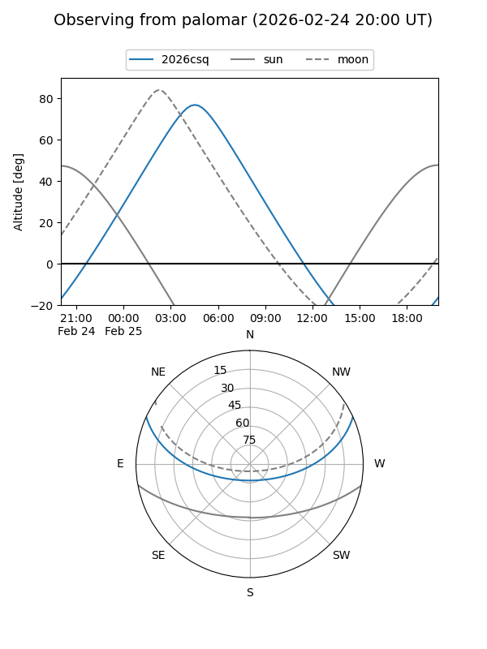
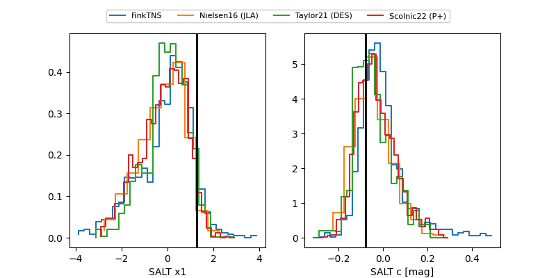

2026csq
Target 2026csq at 2026-02-25 04:38
Aliases and brokers:
FINK: link
Lasair: link
ALeRCE: link
TNS: link
YSE: link
alt names
ZTF26aafofhu (ztf,fink_ztf)
2026csq (tns,yse)
Coordinates:
equatorial (ra, dec) = 105.8012,+20.33917
equatorial (HMS+DMS) = 07:03:12.29,+20:20:21.00
galactic (l, b) = (195.8701,+11.61393)
Flags:
Photometry:
last ztfg=19.44, ztfr=19.24
7 ztfg, 6 ztfr detections
Lightcurve

Visibility


Additional plots
